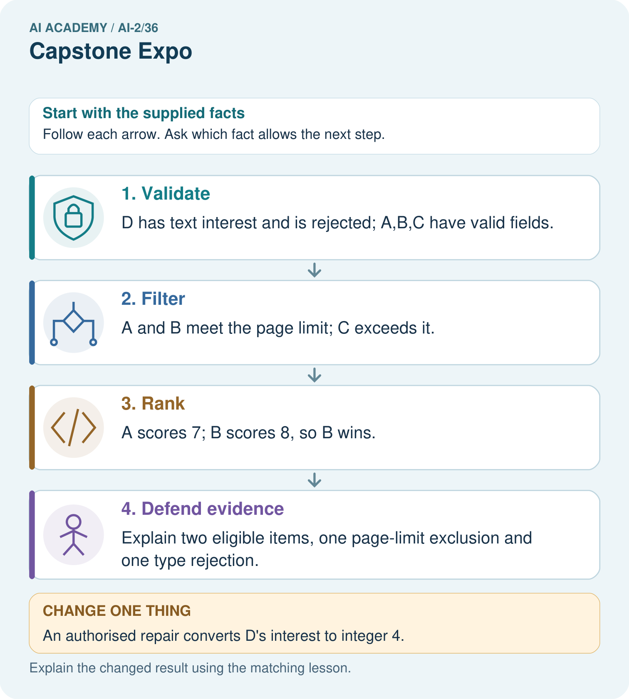
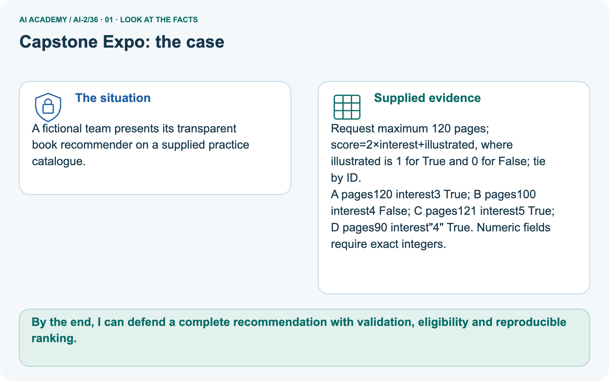
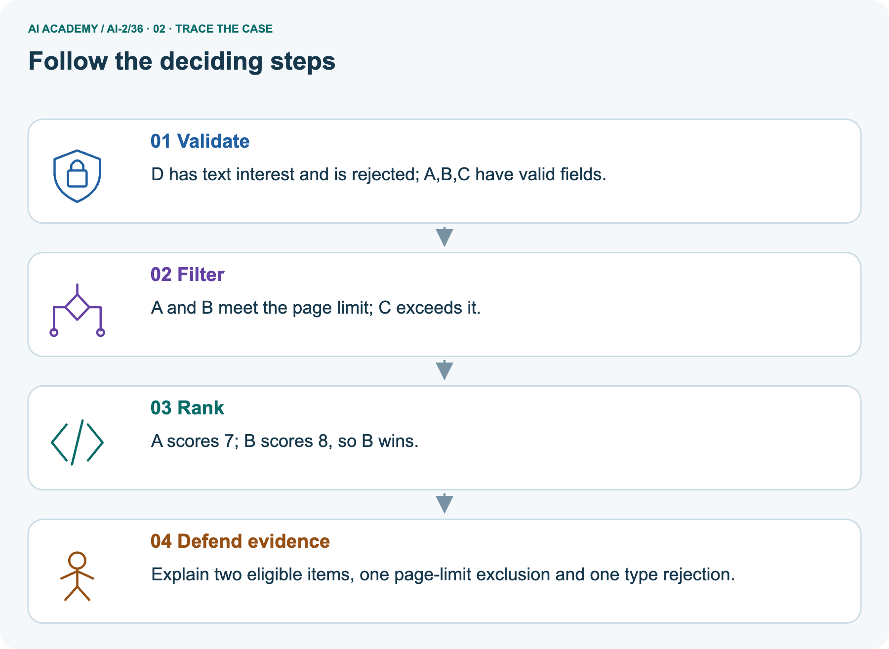
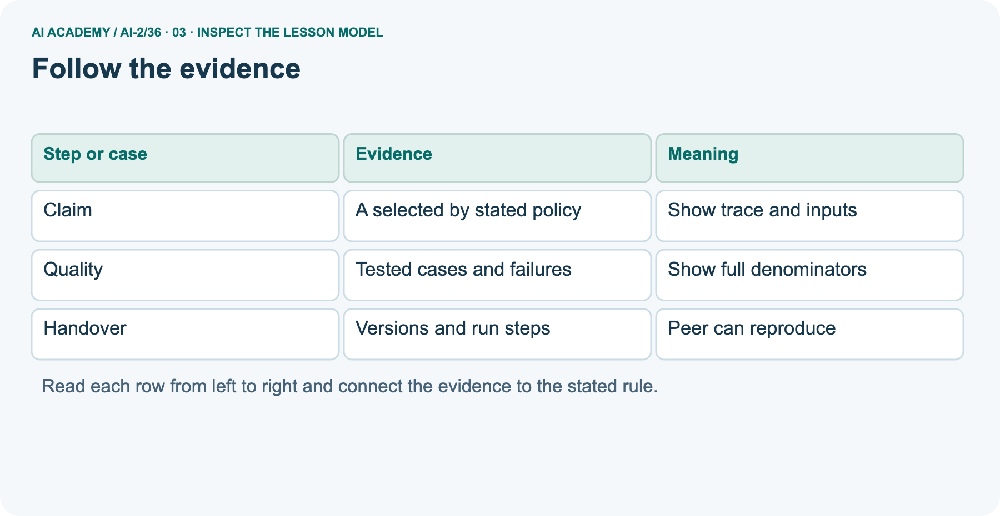
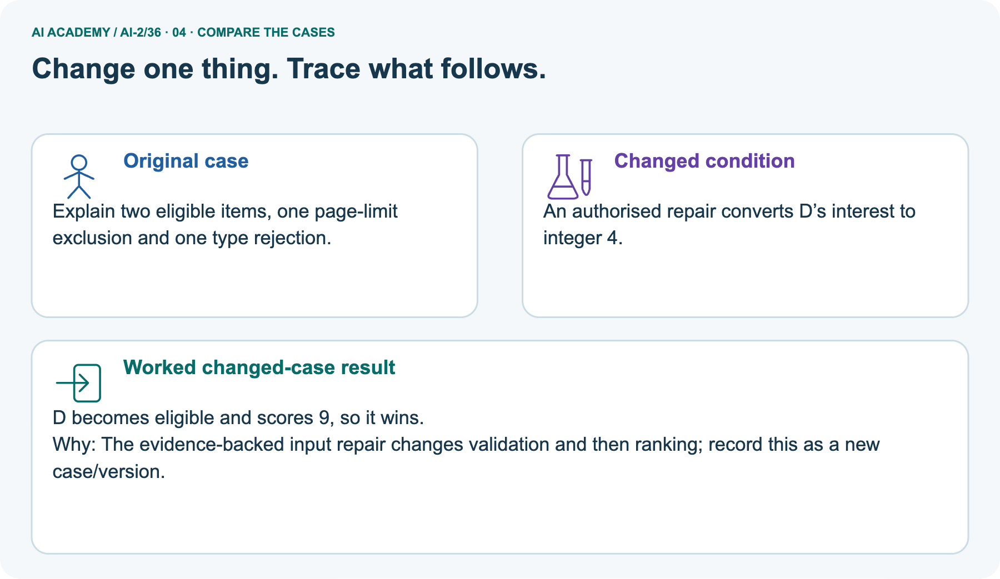
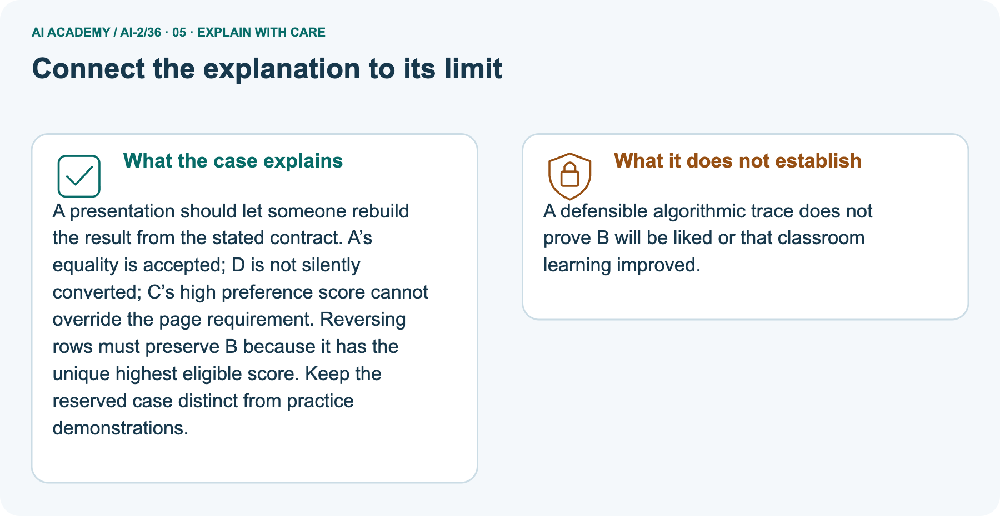
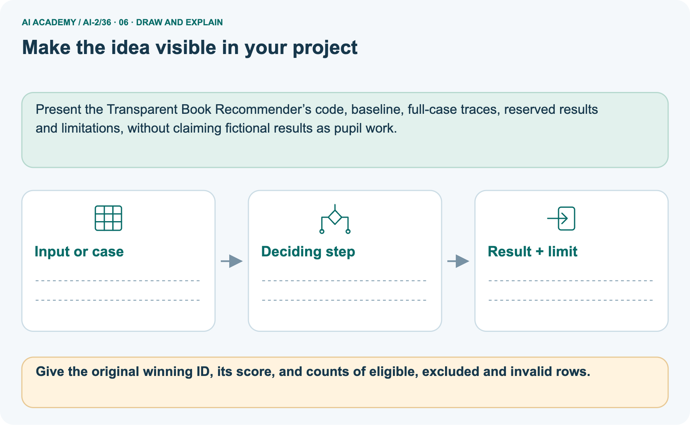

AI Academy · Level 2 · Grade 7 · Week 36 · Teacher guide
Capstone Expo
Learn to understand, design, build, test and explain AI systems responsibly.
Project: Transparent Book Recommender
Teacher guide · 1 of 9
Capstone Expo
Prepare Capstone Expo: check the target, prerequisites, resources and adaptable teaching schedule.
Teach the learning cycle
Primary target: Defend an application using reproducible evidence
| Session | Sequence and minutes | Resources |
|---|---|---|
| Session 1 · Understand · 45 min | 0–7: recall and prerequisite; 7–15: inspect the concrete case and predict; 15–30: teacher models the worked trace; 30–40: learners explain a step using the text and visual; 40–45: check the core idea. | Use Your mission, Notice the evidence, See how it works, Compare the cases, Words that unlock the idea and Follow a worked example; record the brief recall in the workbook. |
| Session 2 · Practise · 45 min | 0–5: retrieve the procedure; 5–15: W2 completion practice; 15–23: explain and check with a partner; 23–30: each learner answers the misconception check; 30–40: targeted reteaching or a harder variation; 40–45: prepare the investigation. | Use Find and repair a mistake, Practise together, Run the investigation and Build your understanding; use the matching workbook W2 and misconception check. |
| Session 3 · Investigate and transfer · 45 min | 0–5: retrieve the decision rule; 5–20: investigate or trace; 20–30: start the independent case; 30–38: connect the project; 38–43: act on feedback; 43–45: plan the return check. | Use Run the investigation, Connect your project, Show what you know, Study a complete case and Try a new case independently. Allow extra time for the full task set. Use a coding lab only when this week actually provides one; Your lesson route is the planning section. |
This is a starting allocation of 135 minutes, not a validated duration. Preserve all named topics. Schedule extra time for connected examples, the full investigation, independent cases and project building.
Repeated copies of a case share one recorded attempt; they are not new evidence.
Retrieval answer guidance
Improve and Challenge
Without opening the old lesson, explain one key idea from Improve and Challenge. Give an example and a mistake that the idea helps you avoid.
Look for: Repair a specific observed failure
Reference example, not the only acceptable wording: Strict less-than excludes equality; at most requires <=.
Build the Recommender
Without opening the old lesson, explain one key idea from Build the Recommender. Give an example and a mistake that the idea helps you avoid.
Look for: Implement a deterministic recommender
Reference example, not the only acceptable wording: Both score 8 and qualify; A is alphabetically first under the tie rule.
Agents and Tools
Without opening the old lesson, explain one key idea from Agents and Tools. Give an example and a mistake that the idea helps you avoid.
Look for: Explain the mechanism and terminology of state machines for bounded agents
Reference example, not the only acceptable wording: Teacher explanation: A bounded agent uses explicit states and finite action limits. A state machine makes invalid transitions visible.
States are ready, looking_up, review, done. ready may start lookup; lookup may finish done or request review; review may finish done after authorised evidence. done is terminal. Maximum two lookup attempts.
Use the student module and workbook section with this exact week title. The worked case, independent question and answers below form one aligned lesson sequence.
What the learner must demonstrate
Present a recommender that gets 8/10 final requests right. One failure invents a title; another violates a hard page limit. Is '80%, ready for everyone' justified? Propose release criteria.
Concept to explain
Ownership is demonstrated by a fresh recommendation and evidence-based defense.
| Term | Meaning |
|---|---|
| capstone | A final project combining skills and evidence developed across the course. |
| defense | An explanation of a project decision supported by evidence and an account of its limitations. |
| transfer | Apply an idea or skill to a new case rather than copy the worked example. |
| limitation | A condition or missing capability that restricts what a result can establish or a system can safely do. |
Prepare the class
Use the supplied scenario, student illustrations and blank paper. For numeric work, offer counters or a calculator after learners show the setup. Fictional records are supplied; personal data and paid accounts are unnecessary.
Alternative compact allocation
This compact option is not the full-week schedule. Use the main teaching cycle and allow extra sessions for the investigation, independent work and project.
Allow 80 minutes: recall 8; explanation 12; worked demonstration 15; guided practice 20; independent assessment 15; project and reflection 10. Extend the lab into a second session when needed.
Preparation for the connected explanation
Teach Week 36 as a two-session investigation using fictional data. Finish the fictional activity chooser with a short evidence-based presentation and a reproducible handover.
Show the purpose, contract, pipeline, one ordinary trace, one boundary or failure case, improvements and remaining limits. A working demonstration supports a software claim, not a claim of proven learning benefit.
Assess the three stated outcomes through the independent task, not by copying the worked result.
Readiness answer
Identified inputs, code/configuration, rules and expected outputs that another person can rerun.
Python 3 editor with a fresh local practice file
Paper trace table and the student workbook
Fictional input records from this lesson; no real student identifiers
End goal for the pictorial case
By the end, I can defend a complete recommendation with validation, eligibility and reproducible ranking.
This added worked case illustrates the week’s main idea. Retain all original and connected topics; schedule its practice within the teaching cycle.
Teacher guide · 2 of 9
Explain the mechanism
Model Capstone Expo using the supplied case, labelled mechanism and reasoning. Make the scope of each conclusion explicit.
Input → Process → Output
Trace the information. At each stage, ask what changed and how you could test it.
Which stage could fail even when the other two are correct? Explain:
Predict first. Then check each step. A correct answer without visible reasoning is incomplete evidence.
1. Demo one known reader profile end to end.
2. Recalculate one book score in front of the audience.
3. Accept an unseen profile and predict before running.
4. State one limitation, one fairness check, and one responsible next improvement.
Recalculate, retrace, or restate the reasoning in your own representation:
CHECK Did the evidence answer the exact question? Did the total, path, or source record stay consistent?
Concrete teaching case
The teaching case
An expo claim says the recommender knows everybody's favourite book after twelve tests.
The teaching case
Rewrite the defence.
Exact explanation to model
Why the result follows
Explain trait-based ranking, report the twelve outcomes and limits, and demonstrate no-match handling. It cannot know unstated preferences.
Explain the added worked example
Explain the added worked example · 1
Finish the fictional activity chooser with a short evidence-based presentation and a reproducible handover.
Show the purpose, contract, pipeline, one ordinary trace, one boundary or failure case, improvements and remaining limits. A working demonstration supports a software claim, not a claim of proven learning benefit.
The example report prints A 8 and its counts are internally consistent. These checks do not prove A is the correct winner; the input records and scoring trace are also needed.
Keep raw fictional data, source code, settings, test results and change log together.
Key terms
| Term | Meaning |
|---|---|
| Defense | An explanation supported by evidence and questions |
| Evidence bundle | The records needed to check a project claim |
| Demonstration | Showing the application on specified inputs |
| Handover | Giving another person enough information to use or check the work |
Model the reasoning aloud
Use the complete worked example below before asking learners to complete W2. Reveal a small part, invite a prediction, then explain the deciding step.
These teacher notes contain solutions; do not reveal the independent case answer during modelling.
| Thinking move | Teacher prompt |
|---|---|
| Plan | What is given? What is the question? Which procedure fits these facts? |
| Do | Point to each input and intermediate step in the worked trace. Name the rule that allows the next step. |
| Check | Does the output answer the question? Which assumption or limitation prevents a larger claim? |
Use the diagram and verbal explanation together. Ask learners to match a sentence to a specific visual step; do not assign learners fixed visual or auditory learning styles.
A pictorial worked case: Capstone Expo
A fictional team presents its transparent book recommender on a reserved catalogue.
The facts we will use
Supplied facts
Request maximum 120 pages; score=2×interest+illustrated, where illustrated is 1 for True and 0 for False; tie by ID.
Supplied facts
A pages120 interest3 True; B pages100 interest4 False; C pages121 interest5 True; D pages90 interest"4" True. Numeric fields require exact integers.

Read the picture one step at a time
Why this result follows
Why the result follows
A presentation should let someone rebuild the result from the stated contract. A’s equality is accepted; D is not silently converted; C’s high preference score cannot override the page requirement.
Reversing rows must preserve B because it has the unique highest eligible score. Keep the reserved case distinct from practice demonstrations.
What this example does not establish
Keep the stated limit
A defensible algorithmic trace does not prove B will be liked or that classroom learning improved.
Change one thing in the pictured case
Change one thing
Change: An authorised repair converts D’s interest to integer 4.
Predicted result
Prediction: D becomes eligible and scores 9, so it wins.
Why the result follows
Reason: The evidence-backed input repair changes validation and then ranking; record this as a new case/version.
Ask while showing the picture
Ask while showing the picture · 2
Cover the result. Ask learners to name the inputs and predict the next step. Uncover one step, connect the icon to the actual procedure, and explain its evidence. Then change the supplied condition and compare.
The picture is a representation; it does not document execution of a real AI model.
Teacher guide · 3 of 9
Demonstrate and guide practice
Demonstrate Capstone Expo, reduce support deliberately and check individual reasoning before discussing answers.
Board sequence
1. Put the facts on the board
Write the given facts: An expo claim says the recommender knows everybody's favourite book after twelve tests.
2. State the decision to explain
Write the question to explain: Rewrite the defence.
3. Reveal the worked reasoning
Reveal after predictions: Explain trait-based ranking, report the twelve outcomes and limits, and demonstrate no-match handling. It cannot know unstated preferences.
Hold back the independent task
Keep for an independent attempt: Your demo recommends the right book once. An audience member asks why they should trust it. Name evidence and one limitation you should present.
Classroom dialogue
Ask the class
Ask: Which facts are given, and which would we have to assume? Learners mark relevant details before discussing answers.
Language to model
Say: Predict first. Show the rule, information path or calculation that would produce the result. A correct guess is not yet an explanation.
Reveal reasoning one step at a time. Explain why a tempting alternative fails. Write units and denominators for arithmetic, trace conditions for decisions, and identify supporting sources for claims.
In pairs, one learner solves while the other checks evidence; exchange roles. Remove the worked answer before independent assessment.
Model these guided questions
The input records and eligibility/scoring/tie trace; also show the policy/version and rejection counts. Exit: All possible input correctness and educational benefit remain unproven.
Add varied independent cases or propose a teacher-approved usability pilot with a defined question; do not claim outcomes before collecting evidence.
Case-specific teaching sequence
| Stage | Teacher action |
|---|---|
| Session 1 start to 7 minutes | Retrieve the prerequisite and explain the purpose in the opening section. |
| 7 to 20 minutes | Read the worked example and diagram; ask learners to trace each step aloud. |
| 20 to 33 minutes | Complete W1 and W2, then compare predictions with observed results. |
| 33 to 45 minutes | Collect the guided prediction before running; discuss a mismatch and its cause. |
| Session 2 start to 8 minutes | Retrieve the main rule without showing the previous answer. |
| 8 to 20 minutes | Use W3 to diagnose and repair the stated failure; rerun an earlier case. |
| 20 to 35 minutes | Collect W4 independently, including code or plan, predictions and explanations, before hints. |
| 35 to 45 minutes | Discuss W5 and the exit; use the fresh retry when support was needed. |
Reduce help deliberately
Completion practice
Completion task: A report says supplied 5, accepted 4 and rejected 2. Identify the inconsistency.
Reasoning to listen for
Teacher check: Accepted plus rejected is 6, not 5. Investigate double counting or reporting before presenting it.
Start by identifying the given inputs together. Leave the intermediate steps blank. If needed, model one step, then withdraw that help on the next step. Move to a full trace only when the partial trace is understood.
For partners, alternate explainer and checker; collect a response from every learner before discussion.
Individual reasoning check
Use the worked case for Defending the data application. Proposed explanation: “A successful run proves the conclusion”. Decide whether this explanation is supported.
Point to the step or supplied fact that decides; explain your repair if needed.
Expected repair
Expected correction: The final independent task must be attempted before hints. Record support honestly and use a new case after support.
Keep teacher answers separate from student materials and do not publish private credentials or real student records in the handover.
Collect explanations, not only yes/no votes. If a misunderstanding is common, re-model the relevant step for the class.
If it affects a few learners, give a short targeted group explanation while others solve a more demanding variation.
Pictorial practice question
Give the original winning ID, its score, and counts of eligible, excluded and invalid rows.
Reasoned teacher answer
B wins with 8. Two rows eligible, one valid-but-too-long row excluded, one type-invalid row rejected.
Changed-case reasoning: D becomes eligible and scores 9, so it wins. The evidence-backed input repair changes validation and then ranking; record this as a new case/version.
Collect each learner’s explanation before discussion. Use the first missing connection between input, deciding step and result to choose support. This question is worked-case practice, not fresh mastery evidence.
Teacher guide · 4 of 9
Run the weekly evidence lab
Run the Capstone Expo investigation and use the first unsupported step to choose a teaching response.
Words You Can Use to Reason
A definition matters when you can recognize the idea, use it, and contrast it with a near-miss.
Predict → Test → Record → Explain
Keep expected and actual results separate. Surprises are useful data when recorded honestly.
Present the working recommender, evidence table, test record, and limitation; answer a fresh calculation and a ‘what could fail?’ question.
What did the hardest test teach you that the normal test did not?
Make the lab runnable
Use the concrete case as the shared normal case and the independent question as a second case. Each pair creates a boundary or missing-information case and predicts its result before testing.
Keep the expected result separate from an observed mistake.
| Record | What to capture |
|---|---|
| Input or evidence | Exact data, instruction or claim |
| Expected result | Answer or safe fallback declared before the run |
| Observed result | Actual result, including errors |
| Explanation | Rule, calculation or evidence explaining the outcome |
| Next test | One justified change and a new prediction |
Diagnose and reteach
For guessing, return to given facts and request a trace. For vocabulary without application, use one example and one non-example. For arithmetic errors, check the setup before the calculation.
Finish with a different uncoached case before recording mastery.
Address these additional misconceptions
A successful run proves the conclusion: The final independent task must be attempted before hints. Record support honestly and use a new case after support.
Keep teacher answers separate from student materials and do not publish private credentials or real student records in the handover.
Matching the example is enough: Require the new W4 case, explicit predictions and an explanation. Fresh retry after support: limit 12; M (minutes 12, fun 3, learning 3), N (11,4,1), O (13,5,5), P (10,-1,2).
Counts 4 supplied,3 accepted,1 rejected,2 eligible. M/N tie at 9; M wins in either order.
A convenient shortcut preserves meaning: A polished presentation can conceal missing evidence. Replace claims such as works for everyone with the exact requirements met, cases executed and known limitations.
Show one prior failure and its repair rather than deleting it from the story.
Match the support to the first error
| What the response shows | Next teaching action |
|---|---|
| Missing or misread facts | Read the case aloud, mark supplied versus unknown facts, and let the learner restate it. |
| Wrong procedure | Return to the deciding step in the worked case. Contrast it with the proposed incorrect explanation. |
| Arithmetic or implementation error | Trace intermediate values or lines; preserve the first mismatch and retry that step. |
| Correct result without a reason | Ask for a trace and a changed case before marking independent understanding. |
| An unsupported wider claim | Ask which supplied evidence supports the claim and which further observation would be needed. |
Offer an oral explanation, drawing, enlarged visual or fewer examples when that removes a reading/writing barrier. Keep the same reasoning goal.
Stretch secure learners by changing a boundary or assumption and asking them to defend the effect, not simply by assigning more of the same questions.
Teacher guide · 5 of 9
Assess and explain the answers
Use the Capstone Expo questions, teacher keys and criteria after the relevant attempts. Previously discussed cases are practice; protect the separately selected independent task.
Worked case answer
Teacher key · Worked case answer
Explain trait-based ranking, report the twelve outcomes and limits, and demonstrate no-match handling. It cannot know unstated preferences.
Independent question
Independent question · withhold the key
Your demo recommends the right book once. An audience member asks why they should trust it. Name evidence and one limitation you should present.
Expected independent answer
Teacher key · Expected independent answer
Show the scoring rule, test preferences, expected and observed outputs, failures and revisions. Explain the limited test coverage and when no match or human review is needed.
What counts as evidence
| Criterion | 0 points | 1 point | 2 points |
|---|---|---|---|
| Result | Incorrect or absent | Partly correct | Correct with necessary conditions |
| Reasoning | No supporting trace | Some steps | Clear mechanism, calculation or source support |
| Limit | Overclaims certainty | Vague limitation | Relevant uncertainty or missing fact |
| Transfer | Copies without adapting | Adapts with prompts | Solves a changed case independently |
Use 6/8 as a classroom checkpoint, with 2 required for both Result and Reasoning. This is a proposed teaching rule, not a validated certification threshold.
Do not count a coached answer as independent mastery; correct unsafe or unsupported claims regardless of total.
Feedback
Ask the learner to find the evidence that challenges this claim: “A successful live example replaces an evaluation record.” Keep the first attempt and an uncoached retry separate.
Original transfer answer
Teacher key · Original transfer answer
No. Report 8/10 on the specified set, but invented titles and constraint violations fail essential criteria. Repair and retest those behaviours, preserve a no-match path and gather broader evidence.
The system ranks declared traits; it does not know unstated preferences.
Explanations for the additional workbook examples
W1 Assemble evidence
Workbook question · W1
List the files or records a peer needs to reproduce the chooser result.
Teacher reasoning · W1
Fictional raw dataset, schema, code version, settings, run instructions, tests with expected/actual results, rejection reasons and change log.
W2 Check report consistency
Workbook question · W2
A report says supplied 5, accepted 4 and rejected 2. Identify the inconsistency.
Teacher reasoning · W2
Accepted plus rejected is 6, not 5. Investigate double counting or reporting before presenting it.
W3 Repair a claim
Workbook question · W3
A presentation says the project proves students learn better. What claim does a successful rule-based demo support instead?
Teacher reasoning · W3
It supports that the tested version follows specified selection rules on the tested cases. Learning benefit needs separate classroom evidence.
W4 Defend a new case independently
Workbook question · W4
Limit is 10. A has minutes 10, fun 2, learning 4; B has 9,3,2; C has 11,5,5; D has 8,"4",2. Validate, rank, give counts, explain the winner, then reverse the input order. Present without hints.
Teacher reasoning · W4
4 supplied, 3 accepted, 1 rejected D for rating type, 2 eligible A/B. Both score 8; A wins alphabetically. C is valid but over-limit. Reversal preserves counts and A. Explain the policy and its limits.
W5 State the next evidence need
Workbook question · W5
After passing the new case, what remains unproven and what is a reasonable next step?
Teacher reasoning · W5
All possible input correctness and educational benefit remain unproven. Add varied independent cases or propose a teacher-approved usability pilot with a defined question; do not claim outcomes before collecting evidence.
Assess independent transfer
Independent question · withhold the key
Selected case: Limit is 10. A has minutes 10, fun 2, learning 4; B has 9,3,2; C has 11,5,5; D has 8,"4",2. Validate, rank, give counts, explain the winner, then reverse the input order. Present without hints.
Selected case answer
Teacher key · Selected case answer
4 supplied, 3 accepted, 1 rejected D for rating type, 2 eligible A/B. Both score 8; A wins alphabetically. C is valid but over-limit. Reversal preserves counts and A. Explain the policy and its limits.
| Dimension | Evidence required |
|---|---|
| Explanation | Names the applicable idea or procedure and ties it to the supplied facts. |
| Trace and result | Preserves the given inputs and shows the relevant intermediate steps; distinguishes a prediction from an observed execution. |
| Limits | States the assumptions, missing evidence or conditions under which the result would change. |
Teacher key · Selected case answer
Record each dimension as not yet, with support, or independent. Accept a valid alternative procedure with a defensible trace.
Do not penalise an honestly recorded model failure if the learner correctly explains its evidence and limits.
Feedback that the learner uses
Name the earliest unsupported step and give one action to repair it. Have the learner make that repair now and explain why. Then assess the relevant skill on a fresh, fully specified case.
Confirm it was not previously practised with feedback; solve and check the new case before assigning it. A follow-up design prompt is a starting brief, not automatically an equivalent test.
Teacher guide · 6 of 9
Connect and extend learning
Connect Capstone Expo to Transparent Book Recommender, adapt support and plan a later changed-case check.
Transparent Book Recommender
Final evidence bundle: brief, data, scoring logic, tests, improvement record, and product card.
Keep the decision, input, result, explanation and remaining limitation in the project evidence record. Retrieve this record next week rather than restarting the project.
Support and stretch
Trace one record or condition at a time with counters and labelled columns. Stretch: introduce a tie, boundary or missing field and declare its handling policy before rerunning.
Exit reflection
Ask for one decision the learner can now justify and one situation requiring more evidence or human review. Confidence ratings are separate from correct independent performance.
Bridge to the next week
Review the full project evidence and choose concepts needing another independent attempt before the next level. One expo is not proof of mastery of all AI.
Support and fresh reassessment
Offer a presentation outline only after the initial independent attempt and record support. Extension: let a peer supply a new valid case and require a prediction before running.
Assess explanation, not decorative slide polish.
Independent W4 evidence: 4 supplied, 3 accepted, 1 rejected D for rating type, 2 eligible A/B. Both score 8; A wins alphabetically. C is valid but over-limit. Reversal preserves counts and A. Explain the policy and its limits.
Record whether the learner needed no help, a hint or explanation. Fresh retry after support: limit 12; M (minutes 12, fun 3, learning 3), N (11,4,1), O (13,5,5), P (10,-1,2). Counts 4 supplied,3 accepted,1 rejected,2 eligible.
M/N tie at 9; M wins in either order.
Grade 7 is complete when the learner can independently explain and defend the application. Use readiness evidence and recorded support to plan the next level.
Plan the delayed return
Suggested return points in this level: plan a review after the level ends. Use actual classroom dates, adjusting for holidays and gaps. One, three and six teaching weeks are scheduling choices, not a claimed optimal spacing.
At a delayed check, ask for the idea from memory and a changed application. Compare with the earlier independent response and record support used.
For a new level, revisit the previous capstone before checking the new prerequisites.
| Record | Teacher evidence |
|---|---|
| Learner code and date | |
| Concept and case used; prior exposure | |
| Explanation / trace / limits | |
| Support and first repair | |
| Changed case and delayed outcome | |
| Next teaching action |
Use the evidence to choose reteaching or the next step. A completed page, confidence rating or attractive project does not by itself demonstrate understanding.
Project evidence from this case
Present the Transparent Book Recommender’s code, baseline, full-case traces, reserved results and limitations, without claiming fictional results as pupil work.
Teacher guide · 7 of 9
Prepare, teach and assess
Use this preparation summary alongside the detailed Capstone Expo lesson; it is a checklist rather than a replacement for the full sequence.
Teaching target
Teaching target: Defend an application using reproducible evidence
Prepare the labelled worked-case picture, the matching workbook, fictional input cards and a place for individual responses. No paid AI account is required for the paper reasoning activities.
| Session | Plan | Resources |
|---|---|---|
| Session 1 · Understand · 45 min | 0–7: recall and prerequisite; 7–15: inspect the concrete case and predict; 15–30: teacher models the worked trace; 30–40: learners explain a step using the text and visual; 40–45: check the core idea. | Use Your mission, Notice the evidence, See how it works, Compare the cases, Words that unlock the idea and Follow a worked example; record the brief recall in the workbook. |
| Session 2 · Practise · 45 min | 0–5: retrieve the procedure; 5–15: W2 completion practice; 15–23: explain and check with a partner; 23–30: each learner answers the misconception check; 30–40: targeted reteaching or a harder variation; 40–45: prepare the investigation. | Use Find and repair a mistake, Practise together, Run the investigation and Build your understanding; use the matching workbook W2 and misconception check. |
| Session 3 · Investigate and transfer · 45 min | 0–5: retrieve the decision rule; 5–20: investigate or trace; 20–30: start the independent case; 30–38: connect the project; 38–43: act on feedback; 43–45: plan the return check. | Use Run the investigation, Connect your project, Show what you know, Study a complete case and Try a new case independently. Allow extra time for the full task set. Use a coding lab only when this week actually provides one; Your lesson route is the planning section. |
Before class, solve the supported practice: A report says supplied 5, accepted 4 and rejected 2. Identify the inconsistency.
Supported practice answer
Reasoned practice answer: Accepted plus rejected is 6, not 5. Investigate double counting or reporting before presenting it.
Check every learner before discussion: Use the worked case for Defending the data application. Proposed explanation: “A successful run proves the conclusion”. Decide whether this explanation is supported.
Point to the step or supplied fact that decides; explain your repair if needed.
Repair the misconception
Misconception repair: The final independent task must be attempted before hints. Record support honestly and use a new case after support.
Keep teacher answers separate from student materials and do not publish private credentials or real student records in the handover.
Support without giving away the answer
Support: read the exact case aloud, enlarge the labelled picture, supply input cards and model only the first deciding step. Accept a spoken explanation or drawing; retain the reasoning goal.
Extend the reasoning
Extension: An authorised repair converts D’s interest to integer 4. Require a prediction and a reason before comparing. Expected result: D becomes eligible and scores 9, so it wins.
Reason: The evidence-backed input repair changes validation and then ranking; record this as a new case/version.
Protect the independent attempt
Independent assessment: withhold the reserved answer until the learner has attempted the new case. Record support separately from correctness.
| Criterion | Not yet | With support | Independent |
|---|---|---|---|
| Explanation | Names an answer without a deciding fact | Uses a hint to link fact and decision | Explains the deciding fact in own words |
| Trace or test | Cannot connect input and result | Completes steps with prompts | Traces or tests a changed case accurately |
| Limits and revision | Claims more than evidence supports | Names a limit after a prompt | States a defensible limit and useful next test |
Project checkpoint
Project checkpoint: Present and defend. Demonstrate the system, explain one failure and justify the next improvement with evidence.
Use the weekly teacher answer for topic-specific reasoning. A saved progress tick is an activity record; judge mastery from the learner’s explanation and evidence.
Teacher guide · 8 of 9
Use feedback, labs and repair paths
Use feedback, earlier review and portfolios purposefully. Apply the coding routine only when this lesson has an executable lab.
Use the two formative questions as supported practice, not as independent mastery scores. Discuss the deciding evidence rather than accepting a guessed selection.
The feedback comes from the reviewed public worked case. Do not reveal the separately reserved independent teacher answer until the learner has attempted that case.
Ask students to predict before running code. Preserve errors and actual outputs; collect a changed test and an explanation. The branch-boundary and indexing lessons deliberately include failure cases.
Use the earlier worked-explanation links to address a specific missing building block, then return to the current question. Adapt this suggestion after observing the learner; it is not an automatic diagnosis.
Collect the completed-work portfolio as evidence. Record support separately from correctness, and assess explanation, trace/test and limitations. Progress ticks and quiz selections alone do not establish mastery.
Teacher guide · 9 of 9
Visual concept journey
Show one Capstone Expo graphic at a time, request a prediction and discuss its trace before the independent assessment.
Use one picture at a time. Hide a worked result before asking for a prediction, then reveal it for feedback. These are supported teaching cases; retain the separate independent assessment for a fresh first attempt.
01. Capstone Expo: the case

A fictional team presents its transparent book recommender on a reserved catalogue. Supplied facts: Request maximum 120 pages; score=2×interest+illustrated, where illustrated is 1 for True and 0 for False; tie by ID.
A pages120 interest3 True; B pages100 interest4 False; C pages121 interest5 True; D pages90 interest"4" True. Numeric fields require exact integers.
Point to the given fact that matters most. Explain why it matters.
Discuss while showing the picture
Teacher prompt: Point to the given fact that matters most. Explain why it matters. Ask learners to describe one label or arrow in ordinary words. Use the adjacent transcript if the image is difficult to see.
02. Follow the deciding steps

Validate: D has text interest and is rejected; A,B,C have valid fields. → Filter: A and B meet the page limit; C exceeds it. → Rank: A scores 7; B scores 8, so B wins. → Defend evidence: Explain two eligible items, one page-limit exclusion and one type rejection.
Point to each numbered stage and explain which recorded input it uses.
Discuss while showing the picture
Teacher prompt: Point to each numbered stage and explain which recorded input it uses. Ask learners to describe one label or arrow in ordinary words. Use the adjacent transcript if the image is difficult to see.
03. Follow the evidence

Follow the evidence. Claim | A selected by stated policy | Show trace and inputs. Quality | Tested cases and failures | Show full denominators. Handover | Versions and run steps | Peer can reproduce
Read the labels and values. Explain the relationship the model shows.
Discuss while showing the picture
Teacher prompt: Read the labels and values. Explain the relationship the model shows. Ask learners to describe one label or arrow in ordinary words. Use the adjacent transcript if the image is difficult to see.
04. Change one thing. Trace what follows.

Original case: Explain two eligible items, one page-limit exclusion and one type rejection. Changed condition: An authorised repair converts D’s interest to integer 4.
Expected result: D becomes eligible and scores 9, so it wins. Reason: The evidence-backed input repair changes validation and then ranking; record this as a new case/version.
Predict before checking the worked changed-case result. Name what changed and what the supplied facts allow you to conclude.
Discuss while showing the picture
Teacher prompt: Predict before checking the worked changed-case result. Name what changed and what the supplied facts allow you to conclude. Ask learners to describe one label or arrow in ordinary words.
Use the adjacent transcript if the image is difficult to see. Changed-case reasoning: The evidence-backed input repair changes validation and then ranking; record this as a new case/version.
05. Connect the explanation to its limit

A presentation should let someone rebuild the result from the stated contract. A’s equality is accepted; D is not silently converted; C’s high preference score cannot override the page requirement.
Reversing rows must preserve B because it has the unique highest eligible score. Keep the reserved case distinct from practice demonstrations.
Limit: A defensible algorithmic trace does not prove B will be liked or that classroom learning improved.
Explain the case, then point to a limit on the claim.
Discuss while showing the picture
Teacher prompt: Explain the case, then point to a limit on the claim. Ask learners to describe one label or arrow in ordinary words. Use the adjacent transcript if the image is difficult to see.
Keep the stated scope: A defensible algorithmic trace does not prove B will be liked or that classroom learning improved.
06. Make the idea visible in your project

Present the Transparent Book Recommender’s code, baseline, full-case traces, reserved results and limitations, without claiming fictional results as pupil work. Draw your input, deciding step, result and limit.
Supported question: Give the original winning ID, its score, and counts of eligible, excluded and invalid rows.
Draw your project trace and justify the deciding step using evidence.
Discuss while showing the picture
Teacher prompt: Draw your project trace and justify the deciding step using evidence. Ask learners to describe one label or arrow in ordinary words. Use the adjacent transcript if the image is difficult to see.
Supported practice key: B wins with 8. Two rows eligible, one valid-but-too-long row excluded, one type-invalid row rejected.